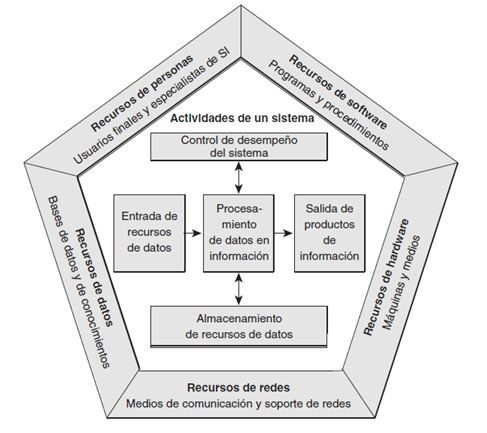

Para poder hablar de sistemas de información es preciso reunir seis componentes, que deben ser capaz de integrarse para trabajar de manera conjunta:
1° Hardware: se trata de la tecnología de almacenamiento, comunicaciones, entradas y salidas de datos.
2° Software: son los programas destinados a recoger los datos, almacenarlos, procesarlos y analizarlos, generando conocimiento para el usuario final.
3° Datos: son las porciones de información donde reside todo el valor.
4° Procedimientos: son las políticas y reglas de negocio aplicables a los procesos de la organización.
5° Usuarios: ellos son quienes se interactúan con la información extraída de los datos, constituyendo el componente decisivo para el éxito o el fracaso de cualquier iniciativa empresarial.
6° Retroalimentación: es el elemento clave de cualquier sistema de información al ser la base para la mejora continua.
Aclaremos un poco las dudas:
|